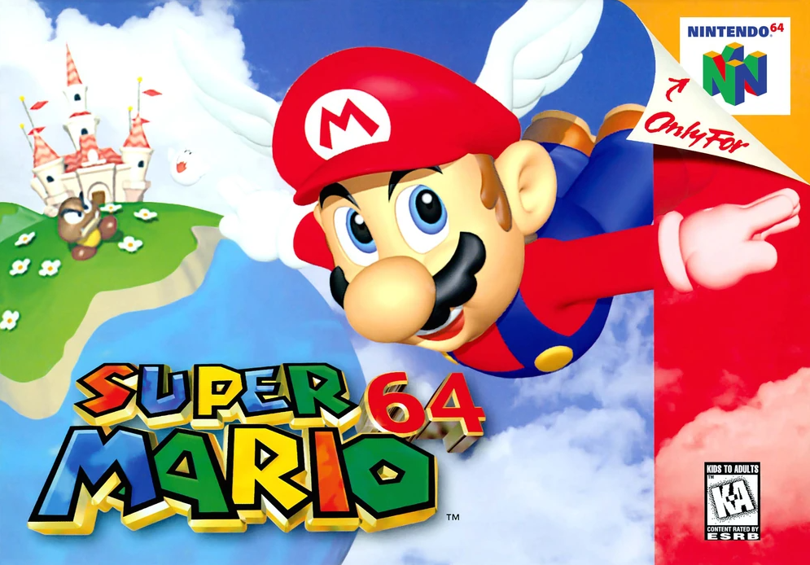
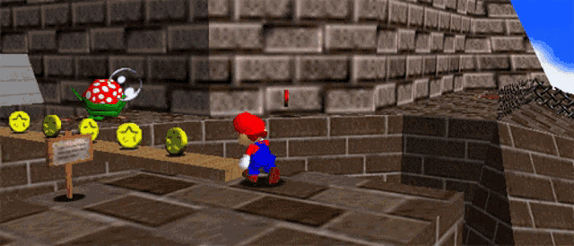

Story
"Princess Peach sends Mario to come to her castle to have a cake. When
Mario arrives, he meets the Lakitu Bros., who are filming Mario. They go
inside the castle and hear a familiar voice telling him to get out of
the castle. Toad informs him that Bowser has kidnapped the princess
again and is holding everyone hostage inside the castle walls. He has
also stolen the Power Stars and give them to his minions who are hiding
in paintings spread all over the castle. Mario hops in the magical
paintings and retrieves the Power Stars in order to defeat Bowser and
save the Princess. During the journey, Mario makes his way to more areas
of the castle. When he finds out he has enough stars, he goes into
Bowser's final level. Once he makes his way through the long course,
Mario sees Bowser and the two battle. When Mario defeats Bowser, he
gives up and hands him a Giant Power Star, before he explodes. Mario
grabs the star, and has been given the Wing Cap and flies away back to
the castle. As Mario's Wing Cap disappears, he uses the Giant Power Star
to make Princess Peach appear. Peach wakes up and thanks Mario, by
kissing him, and the cake she had promised before."
Gameplay
The aim of the game is to collect enough Power Stars to progress to new,
previously inaccessible areas of the castle. The primary goal is to
collect enough to reach the final battle and save Princess Peach from
Bowser. Each level, or "course", holds six stars, plus one for
collecting one hundred coins, which are obtained by completing a certain
mission. The only clue to what this may be is in the star's title, which
is often cryptic. Aspects of each course vary with each star; beyond
this, the player is given free rein in exploring each world. Upon
starting for the first time, Mario begins outside of the Mushroom
Castle, a multi-floor hub mostly devoid of enemies and obstacles. Inside
the castle are multiple rooms with paintings and other surfaces
concealing portals to the game's various courses. There is a total of
120 Power Stars in the game, though only 70 need to be collected in
order to complete the game. The Power Stars are split between the
fifteen main courses, nine secret courses that are smaller and usually
contain only one or two Stars, and various secrets inside the Mushroom
Castle. Only a limited portion of the castle is explorable at first, but
as Mario collects more Stars, he is able to open more rooms and unlock
Bowser levels.

Defeating Bowser in his first two levels opens the castle's basement and
top floor, respectively. Super Mario 64 introduced several abilities to
the series, allowing Mario to crawl, Ground Pound, punch and kick,
backflip, sideflip, wall-kick, long-jump, and slide, amongst others.
These moves give the player greater freedom than in past games as
regards ways that Mario can be controlled, introducing the idea of there
being a number of alternative routes to arrive at any one place. These
are additionally used to perform actions such as pressing down switches
as well as harming enemies or reaching high or distant places.
 The game's use of the Nintendo 64 Controller's Analog Stick is another
first for the Mario franchise and allows the player to move Mario at
different speeds by controlling the stick. This allows Mario to walk
slowly, which, as opposed to running, does not awaken sleeping enemies.
Caps are another aspect introduced to the gameplay in Super Mario 64,
giving Mario the ability to fly, walk underwater or walk through certain
barriers. They are turned on in short bursts and made available when
activated with the switch associated with each one. This game employs an
eight-sided health meter called the Power Meter, which is depleted when
Mario makes contact with enemies or obstacles, and is replenished by
collecting coins, running through Spinning Hearts, or submerging Mario
in a body of water. Like the previous games, Super Mario 64 employs a
life system, although as the game saves after most progression tasks,
the effect of a Game Over is marginal.
The game's use of the Nintendo 64 Controller's Analog Stick is another
first for the Mario franchise and allows the player to move Mario at
different speeds by controlling the stick. This allows Mario to walk
slowly, which, as opposed to running, does not awaken sleeping enemies.
Caps are another aspect introduced to the gameplay in Super Mario 64,
giving Mario the ability to fly, walk underwater or walk through certain
barriers. They are turned on in short bursts and made available when
activated with the switch associated with each one. This game employs an
eight-sided health meter called the Power Meter, which is depleted when
Mario makes contact with enemies or obstacles, and is replenished by
collecting coins, running through Spinning Hearts, or submerging Mario
in a body of water. Like the previous games, Super Mario 64 employs a
life system, although as the game saves after most progression tasks,
the effect of a Game Over is marginal.